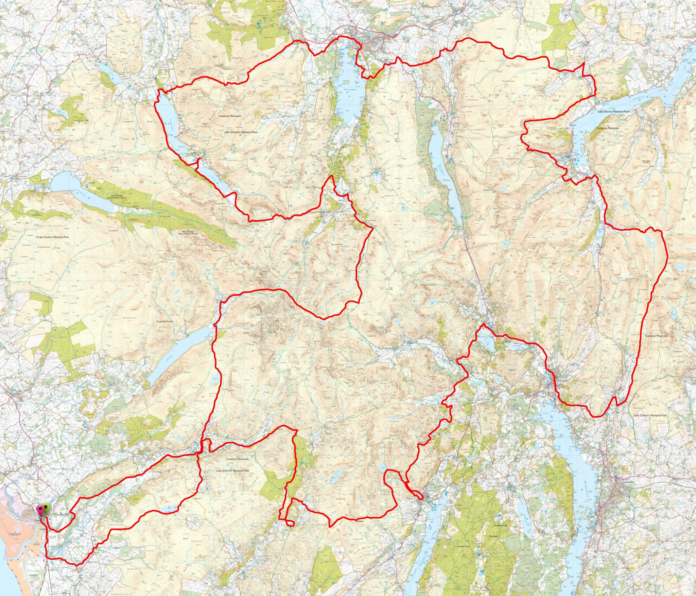

Independent route feature • Respectfully curated
Lakeland Way
A 144-mile long-distance journey through the English Lake District — curated by Richard Jennings.
We’ll only send wider Lake District updates — Lakeland Way route updates stay on Richard’s official site.
This page highlights an independent Lake District project. Lakeland Way is Richard’s route and remains his work.
Route overview
The Lakeland Way is a 144-mile route designed as a multi-day journey through Lakeland’s valleys, passes and living history.
At a glance
• Distance: 144 miles
• Typical schedule: 12 days
• Theme: scenery, heritage and immersion (not peak-bagging)
• Status: an independent route (not an official waymarked trail)
What you’ll experience
Old coach and drove roads, packhorse routes, valley paths, and high passes — plus a curated set of stories and points of interest along the way.
Best next step
If you’re considering walking (or running) it, start with Richard’s official itinerary and updates.
Map & route line
The Lakeland Way is Richard Jennings’ independent route. The official site is the definitive source for updates.

Map image used with permission from the Lakeland Way project.
About Richard Jennings
The Lakeland Way is curated by Richard Jennings as a personal tribute to Lakeland — designed to celebrate scenery, nature and history.
Richard

Image used with permission.
Creator & curator
Richard developed the Lakeland Way by linking together historic lines of travel between valleys — routes once used by traders, miners and local communities — into a coherent long-distance journey through the Lake District.
It’s an independent route (not an official waymarked trail) and the definitive reference is Richard’s own website and updates.
Why we’re featuring it
As the Lake District’s largest online community, we highlight independent projects that deepen appreciation of Lakeland. The Lakeland Way is a standout example — thoughtfully curated and already gaining traction with walkers and runners.
What makes it different
Not summit-driven
Designed for immersion — valleys, passes and landscape — rather than a mission to bag peaks.
12-day structure
A practical multi-day format that suits walkers, and provides a natural framework for planning.
Ultra variant
The route concept also extends into an “Ultra” trail option for runners looking for an epic test.
Curated points of interest
Stories, landmarks and features along the way — adding meaning beyond the line on the map.
Explore the Lakeland Way
For official maps, itinerary, updates and route notes, use Richard’s site.
Richard Jennings (Lakeland Way): contact details and updates are available via the official website.
The Lake District — Community & Visitor Hub: partnership enquiries via our site footer contact.
We’ll only send wider Lake District updates — Lakeland Way route updates stay on Richard’s official site.
This page highlights an independent Lake District project. Lakeland Way is Richard’s route and remains his work.